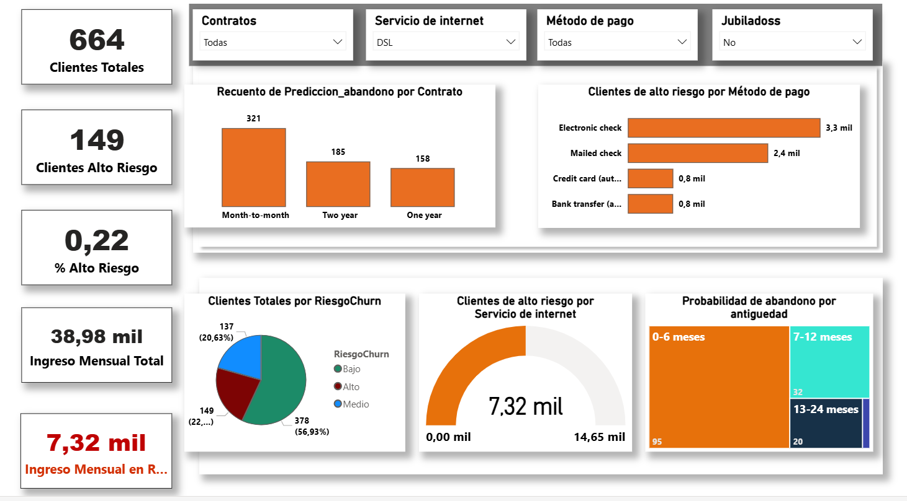
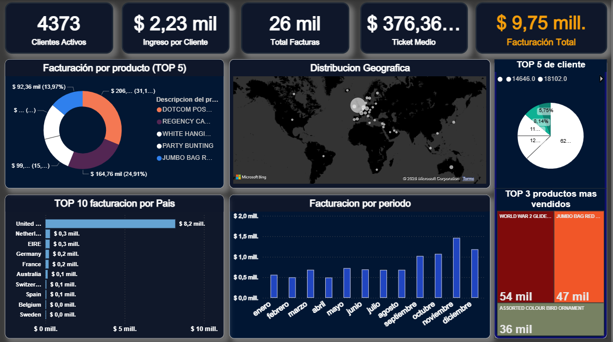
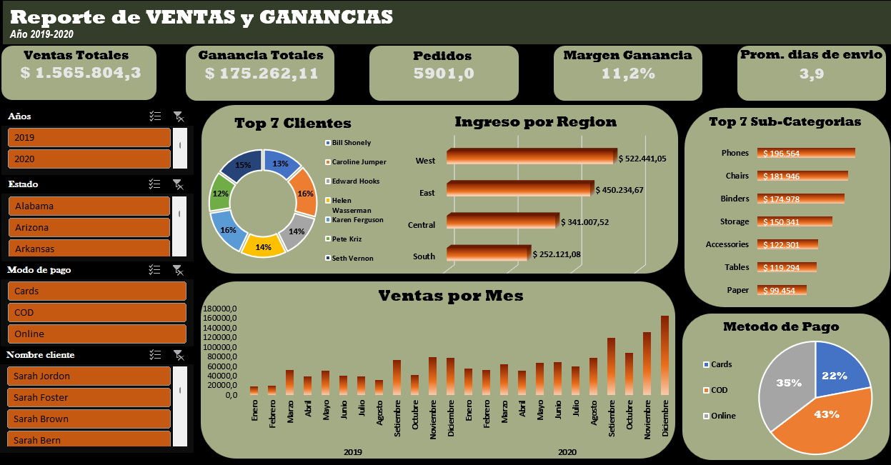

Predicción de Churn
Modelo para identificar clientes en riesgo y activar acciones de retención mediante segmentación + dashboard.
- Problema: reducir abandono y priorizar esfuerzos comerciales.
- Proceso: limpieza, features, entrenamiento y evaluación.
- Salida: score + panel con insights accionables.

Retail Analytics
Dashboard ejecutivo: ventas válidas, devoluciones, ticket promedio, top productos/países.
- Problema: visibilidad de performance y anomalías.
- Proceso: modelo estrella, medidas DAX, páginas por objetivo.
- Salida: insights y ranking dinámico por período.

Superstore Sales Analysis
Análisis de ventas y rentabilidad con SQL y Excel para detectar categorías, productos y segmentos de mayor impacto.
- Problema: entender qué factores impulsan ventas, ganancias y desempeño operativo.
- Proceso: consultas SQL, limpieza de datos y dashboard interactivo en Excel.
- Salida: KPIs ejecutivos, análisis por categoría y visualización para toma de decisiones.
Contacto
Si querés hablar de oportunidades, proyectos freelance o colaboración, escribime.
© Sebastian Flores. Hecho con HTML/CSS/JS.